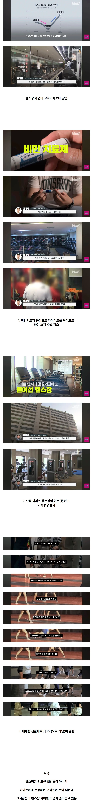

역대급 위기라는 헬스장 사업
댓글
그게 맞긴해
운동중에 살빠지는게 걍 슬로우러닝(유산소)이라서.
헬스는 애초에 살빼는 운동이 아님. 걍 근육을 키우는 미적운동이라 살이 빠질수가없음.
졸라게 먹고 졸라게 뛰면 살이 빠질수도 있지만 졸라게 먹고 졸라게 근육운동해서 살빠지려면 국대급으로 해도 힘듬.
체지방 빠지고 근육이 늘어나는게 제일 건강한 다이어튼데
그게 헬스임
슬로러닝 하는 사람치고 마른사람 본적있냐? 존2러닝이 체지방 연소 효율이 제일 높은 구간인건 맞는데 달팽이마냥 찔끔 뛰어봐야 칼로리 소모량 자체가 적기때문에 헬스보다 살 안빠짐.
근데 결국 헬스장 가게 됨. 아파트 2~3만원 받아서 운영하면 10년뒤에 걸레됨.
근데 살아남는곳은 진짜 운영잘하고 pt전문성 있는곳만 살아남겠지.
결국 비만약 헬스 둘다해야되거늘...
pt특 ) sky생 과외비보다 단가 더비쌈
1대1 피티샵이나 필라테스는 딱히 영향없는거같더라
죄다 런닝머신만 뛰던데 좋긴해
근데 마운자로 맞을때 운동안하면 근손실 쎄게 와서 기초대사량 엄청 떨어져서 운동 더해야되는데
그렇게 됐습니다
어매뒤진 딱새들 양아치 영업도 망하는 이유지 ㅋㅋㅋ
확실히 러닝으로 많이 넘어간듯
지금 비만의 최고 운동은 수영이라 생각함 수영하면 배고파서 끝나고 이것저것 우겨넣는데 그걸 막아주는게 마운자로 라서 수영의 단점을 보완해주고 무릎부하도 적어서 부상위험도 낮고
당장 지도앱 켜서 헬스장 검색해봐라 몇개나 나오나 ㅋㅋㅋ 레드오션임 거기서 아득바득 살아날려면 좋은기구에 좋은 트레이너 소문내면서 오게 해야지...
시골아파트인데 헬스장 생겨서 10시이후에 나혼자 개인룸됨 개꿀
위고비 마운자로 효과로 인한 짐 산업 하향은 딱히 한국만의 현상이 아님. 저거 외국도 한국 이상으로 망하고 있음
pt 받을 비용에 마운자로 맞는게 싸게먹힘
마운자로 맞고 운동 안하면 근손실 장난 아닐건데
혼자하기 힘들어서 그냥 PT받음 145 결제했네 3일전에